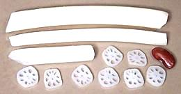

Native to a vast area stretching from Afghanistan to Vietnam, the Asian Lotus has been an important source of food throughout it's entire range since prehistoric times. It has since been carried to all tropical and subtropical regions of the world. Flowers, seeds, leaves and rhizomes (roots) are all edible and popular throughout India, East Asia and Southeast Asia.
The American lotus (Nelumbo lutea) is similarly edible to the Asian species and was a significant native food resource into Colonial times. It is indigenous to the southeastern U.S., Mexico, Honduras and the West Indies but has been dispersed farther by humans.
The Lotus was unknown in Egypt until the Persian invasion. The "sacred lotus" of ancient Egypt was instead the blue water lily Nymphaea caerulea. Lotus and Water Lily are frequently confused but the plants are actually pretty easy to tell apart. Water lily leaves have a deep notch from the edge all the way in to the stem and they always float on the water surface. Lotus leaves are fully circular with stems in the center, no notch, and generally stand proud of the water surface (see flower photo below). Flowers of both are similar and both are noted for mild psychoactive and anesthetic properties. Water lily plants are not so edible and may be toxic.
More on Proteus Order.
The most widely eaten part of the lotus plant is the rhizomes (roots) which are particularly decorative when sliced. Fresh rhizomes are easily available in Southern California Asian markets, but probably not in most of North America. Peeled and sliced rhizomes can often be found in the frozen foods section of Chinese, Southeast Asian and Korean markets and are perfectly good for many recipes.
The photo at the top shows typical full size rhizomes. A large link like the one at the top left will be about 6 inches long, 2-1/2 inches in diameter and weight 10 ounces The variety commonly sold here is just slightly pink and becomes just a little more pink when cooked. Look for roots that are light in color and hard with no soft spots.
 The rootlets shown in the photo to the left are sold in jars packed in brine. They are purely decorative having almost no detectable flavor, but they stay firm and hold their shape when cooked.
Lotus rhizomes can be eaten raw, but if growing conditions are not properly sanitary it can present a risk of parasitic infection, particularly Fasciolopsiasis if pigs are raised nearby. Lotus rhizomes sold in the U.S, is probably safe but it's still better to cook it. Raw it tastes starchy and much like raw potato, just a bit sweeter and crisper.
Cooked lotus rhizomes tastes similar to potato, but the texture is very different. It becomes tender very slowly and remains quite firm, almost crisp even after long cooking. Thin slices can be eaten with just a few minutes of boiling, and will soften only slightly simmered for 45 minutes. Larger chunks are often simmered in soups for up to 2 hours. It's almost impossible to overcook lotus. Lotus slices are sometimes deep fried like potato chips, They look interesting but I think potato tastes better this way.
When preparing, cut away the ends and joints between sections and peel
with a vegetable peeler. Immediately place in water acidulated with citric
acid or lemon juice to prevent discoloration. Recipe weights should be
with the joints and ends cut away but before peeling.
Before drying or packing a needle is used to remove the bitter germ from the seeds - why the ends always appear to be cracked. This is a labor intensive step adding to the cost. The brown ones are too hard for the needle so they are always split.
Lotus seeds are often added to soups and congees. In regions where they are harvested the seeds are also sold fresh still in young pods to be broken out and eaten eat as a snack. They are also sold coated with a crystallized syrup as a confection.
Cooking fresh seeds, simmering 15 minutes seems to give a good flavor and
texture - at 30 minutes they're still pretty much the same. Dried seeds need
to be soaked overnight before cooking, then simmer for about 20 minutes. In
my experience the dried white are a touch bitter while the brown are sweeter
and have a more pleasant flavor.
Lotus rhizomes are strong in dietary fiber, vitamin C, potassium, thiamin, riboflavin, vitamin B6, phosphorus, copper, and manganese. Lotus rhizomes should not be eaten raw if the growing conditions are not known. If they are not properly sanitary raw rhizomes can present a risk of parasitic infection, particularly Fasciolopsiasis if pigs are raised nearby.
pr_lotusz 080203 - www.clovegarden.com